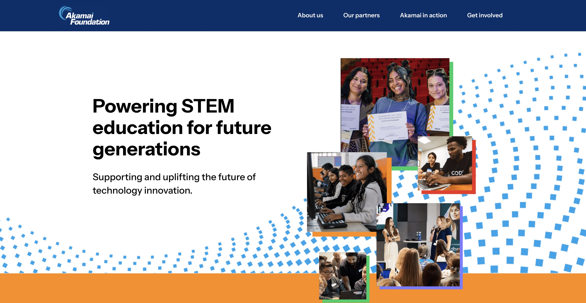
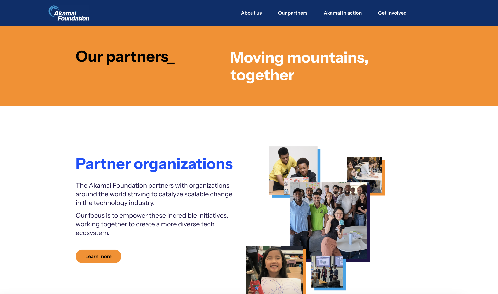
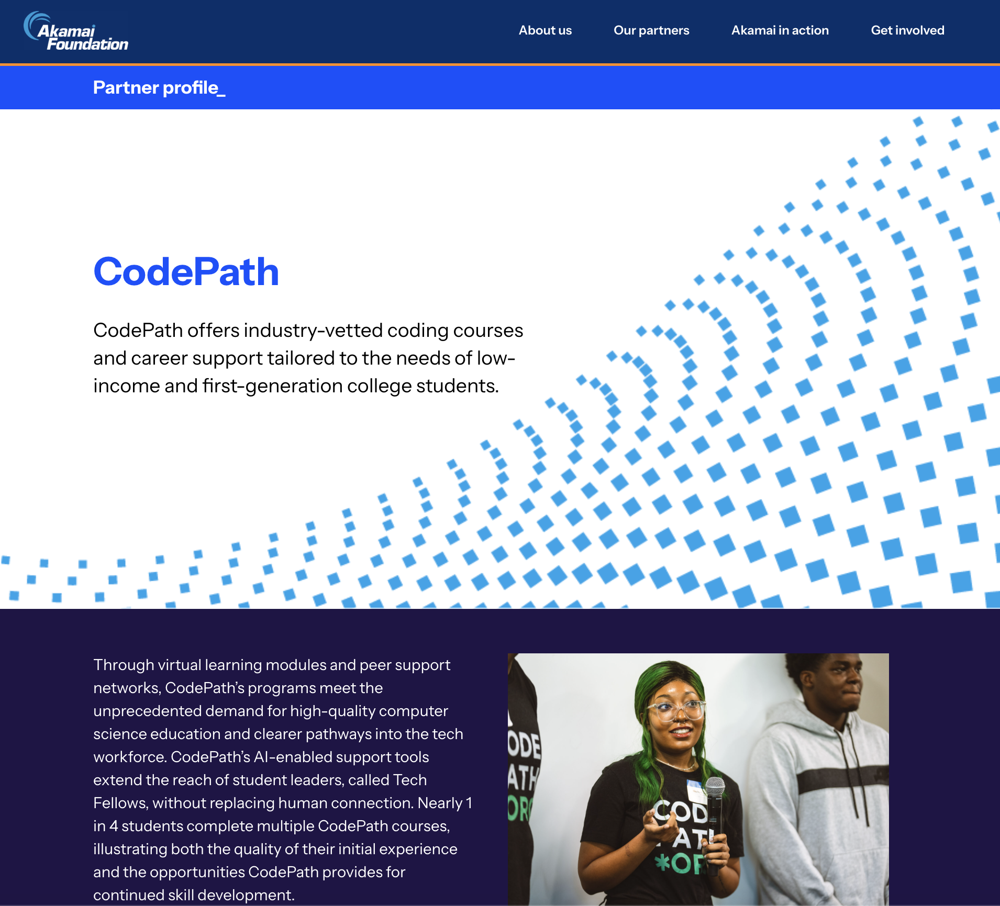

Case Study · Akamai Technologies
The Akamai Foundation needed a real marketing presence, not another throwaway annual site. I designed and built an evergreen website from scratch, launched March 2026, that grows with the organization.
View live site ↗
The Problem
The Akamai Foundation had been building a new website every single year, a time-consuming, expensive cycle that left them with no consistent web presence and no way to build on previous work.
The ask was to finally break that cycle: build a real, evergreen marketing site that could tell the Foundation's story, showcase their global partners, highlight community impact, and grow over time without starting from scratch.
Before
After
What I Did
I owned this project completely, from the initial design in Illustrator through to the build in WordPress and Elementor. That meant working closely within Akamai's brand system while creating a visual language specific to the Foundation's mission around STEM education and global impact.
The site includes multiple page types: homepage, about, partners, community impact, and a templated post system for partner organizations around the world. Each partner gets their own page, built from one reusable template.
Design in Illustrator
Full site design covering layouts, graphics, and visual assets, all created in Illustrator within Akamai's brand guidelines.
Built in WordPress + Elementor
Implemented the design end-to-end in WordPress using Elementor, with no hand-off and no translation loss between design and build.
Templated partner posts
Built a reusable post template for partner organizations, making it easy to add new partners without redesigning each time.
Evergreen architecture
Structured the site so content, stats, and partner stories can be updated year over year without a rebuild.
The Work
The site tells the Foundation's story across multiple pages: mission, global partners (187 organizations across 12 countries), community impact, and volunteer stories. Every section is designed to be updated and expanded over time.

Global partners section, 187 orgs across 12 countries

Templated partner page, reusable across all orgs
The Outcome
"They used to build a new site every year. Now they have one that grows with them, and it launched on time in March 2026."
The site launched in March 2026 and is live at akamaifoundation.com. It surfaces the Foundation's global reach: $12.5M in grant funding, 187 partner organizations, 12 countries, in a way that's clear, on-brand, and built to last.
187
partner organizations featured across the site
12
countries represented, built to scale globally
1
evergreen site replacing an annual rebuild cycle